Chapter 4. 반복문¶
'쉽게 풀어쓴 C언어 Express - 천인국' 7장 학습 내용
1절. 반복문
2절. while문
3절. 센티널
4절. do-while문
5절. 난수
6절. for문
7절. 증감식
8절. 중첩 반복문
9절. 무한루프
10절. break문 & goto문 & continue문
11절. printf
1절. 반복문¶
반복 구조¶
- 어떤 조건이 만족될 때까지 루프를 도는 구조
반복문의 종류¶
- 반복문은 크게 while 루프와 for 루프로 나누어진다.
참 거짓 예제¶
int i = 3;
while(i){
printf("%d는 참입니다.\n", i);
i--;
}
printf("%d는 거짓입니다.\n", i);
// 출력 형태
// 3은 참입니다.
// 2는 참입니다.
// 1은 참입니다.
// 0은 거짓입니다.
반복문 선택 방법¶
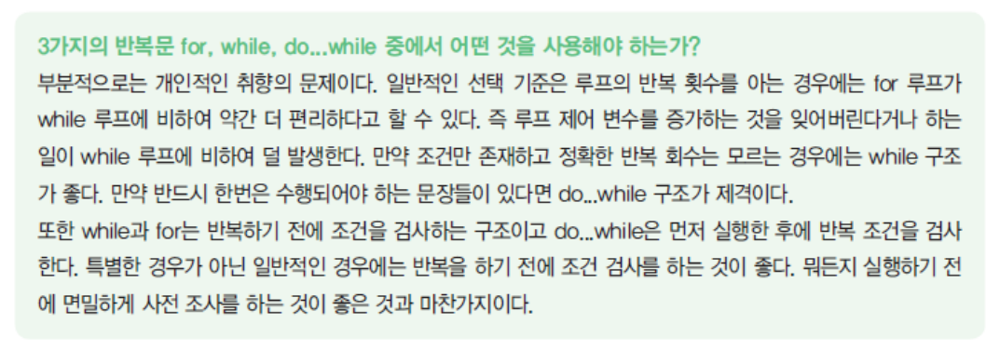
2절. while문¶
while¶
- 주어진 조건이 만족되는 동안 문장들을 반복 실행한다.
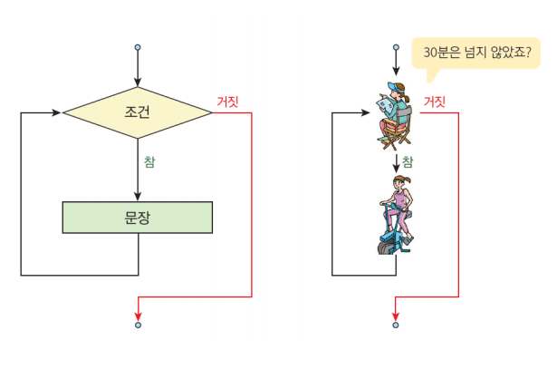
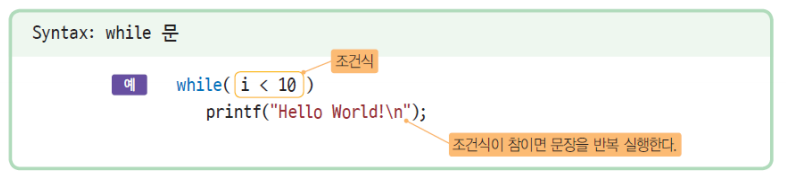
while문 실행 과정¶
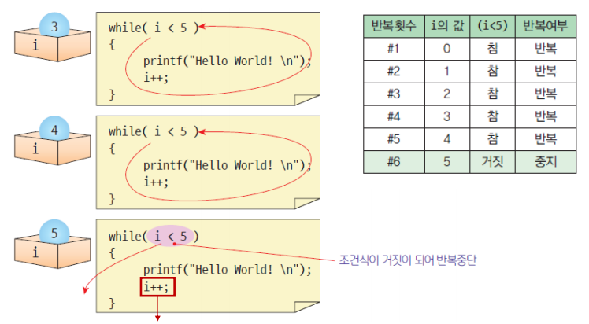
* 만일 i를 증가시키는 증가식이 없었다면, 무한 루프(infinite loop) 문제가 발생한다. * 반복문을 사용할 때는 반드시 반복이 종료되는지 확인해야 한다.
if-while 비교¶
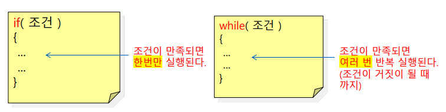
while 문에서 주의할 점¶
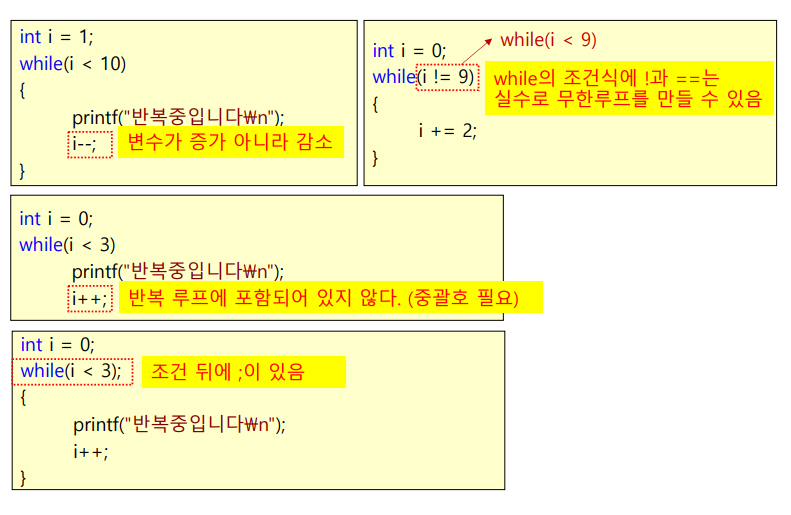
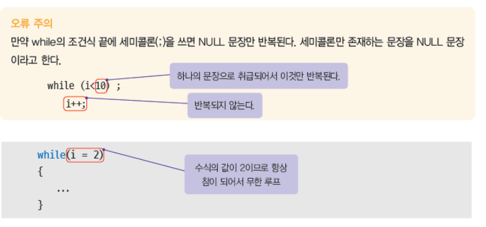
3절. 센티널¶
센티널 (보초값)¶
- 반복루프를 사용하여 사용자가 입력하는 정수의 합을 계산한다고 가정하자.
- 만일 입력될 데이터의 갯수가 미리 정해져 있지 않다면?
- 만약 데이터가 너무 많아서 갯수를 알기 어렵다면?
- 데이터의 끝에 끝을 알려주는 특수한 데이터를 놓을 수 있다.
- 프로그램에서는 이 특수한 데이터가 나타나면 데이터의 입력을 중단하라고 한다.
- 일반적인 데이터 값에서 절대 등장할 수 없는 값으로 선택
- 예시) 성적을 입력받아 성적의 평균을 내는 경우, 음수나 100보다 큰 값을 그 특수 데이터로 선택
- 센티널 : 입력되는 데이터의 끝을 알리는 특수한 값
- 일반적인 데이터 값에서는 절대 등장할 수 없는 값으로 정해 줄 수 있음
- 예시) 성적을 입력받아 성적의 평균을 구하는 경우, 음수나 100보다 큰 값이 센티널이 될 수 있음
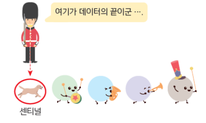
센티널 예제¶
// 성적 평균 구하기
#include <stdio.h>
int main(void)
{
int grade, n;
float sum, average;
n = 0;
sum = 0;
grade = 0; // n과 sum은 합을 통해 계산하기 때문에 0으로 초기화한다.
printf("종료 시 음수 입력\n"); // 센티넬 값
while (grade >= 0){
// grade가 음수가 아니라면, 성적을 계속 입력받음. grade가 음수일 때, 그 값은 센티넬 값임
printf("성적을 입력하세요 : ");
scanf("%d", &grade);
sum += grade; // 합계를 저장할 변수 sum에 입력받은 grade와 sum을 더한다.
n++; // 입력된 성적의 개수를 저장할 변수 n의 값을 1 더한다.
}
sum = sum - grade;
n--;
/* grade의 최신 저장값은 마지막에 입력된 수다. 또한, n에 음수를 입력하면 그 횟수도 n에 저장된다.
물론 n에 음수를 입력하면 while문의 반복이 끝나지만, 센티널 값도 합계와 개수에 포함되는 것이다.
반복 루프가 끝나면 센티널 값을 합계와 개수에서 제거해야 한다.*/
average = sum / n;
printf("성적의 평균은 %f 입니다.\n", average);
return 0;
}
4절. do-while문¶
do-while¶
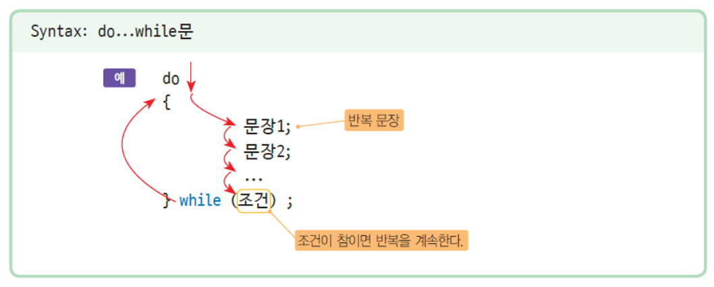
do - while문 예제¶
// 숫자 추측 예제
#include <stdio.h>
#include <stdlib.h>
int main(void)
{
srand((unsigned)time(NULL)); // 난수 발생기 시드
int answer = rand() % 100;
int guess;
int tryy = 0;
do {
printf("정답을 추측하시오 : ");
scanf_s("%d", &guess);
tryy++;
// 시도횟수가 1회 늘어날 때마다 0으로 초기화시킨 시도횟수 변수를 1씩 증가시킨다.
if (guess < answer) // 추측한 숫자가 정답보다 작다면 LOW를 출력
printf("LOW\n");
if (guess > answer) // 추측한 숫자가 정답보다 크다면 HIGH를 출력
printf("HIGH\n");
} while (guess != answer); // 추측한 숫자가 정답과 일치하면 반복을 그만둔다.
printf(" 축하합니다. 시도횟수 = %d", tryy); // 정답이 일치하면 시도횟수를 출력한다.
return 0;
}
5절. 난수(random)¶
난수¶
- 예측할 수 없는 하나의 난수를 생성한다.
- 난수의 범위는 0 ~ RAND_MAX 까지이며, RAND_MAX는 0x7fff이므로, 난수의 범위는 0 ~ 32767 이다.
기본 사용법¶
- i = rand()%n
- 여기서 n은 횟수를 의미한다.
- 0 ~ n - 1 범위의 난수를 i에 대입한다.
- 예를 들어, n = 6이라고 하면 0, 1, 2, 3, 4, 5 중 하나가 i에 대입되는 셈이다.
기본 응용법¶
- i = rand()%n + m
- 여기서 m은 시작값을 의미한다.
- 1번 기본 사용법을 응용한 것으로, 0 + m ~ (n - 1) + m 범위의 난수를 i에 대입한다.
- 예를 들어, n = 6, m = 4 라고 하면 4, 5, 6, 7, 8, 9 중 하나가 i에 대입되는 셈이다.
- 다른 예로, n = 5, m = -2 라고 하면 -2, -1, 0, 1, 2 중 하나가 i에 대입되는 셈이다.
기본 응용법 - 2¶
- i = rand()%n * m
- 0 ~ (n - 1) 범위의 수들에 m을 곱한 수를 i에 대입한다.
- 예를 들어, n = 4, m = 2 라고 하면 0, 2, 4, 6 중 하나가 i에 대입되는 셈이다.
- m의 값을 2로 주면 2의 배수, 3을 주면 3의 배수가 대입된다.
기본 응용법 - 3¶
- i = (rand()%n + m) * k
- 0 + m ~ (n + m) - 1 범위의 수들에 k을 곱한 수를 i에 대입한다.
- 예를 들어, n = 3, m = 2, k = 4 라고 하면 8, 12, 16 중 하나가 i에 대입되는 셈이다.
- 어떤 수의 배수를 사용할 때 용이하다.
기본 응용법 - 4¶
- i = rand()%n * m + k
- 0 ~ n - 1 범위의 수들에 m을 곱하고 k를 더한 수를 i에 대입한다.
- 예를 들어, n = 3, m = 2, k = 5 라고 하면 5, 7, 9 중 하나가 i에 대입되는 셈이다.
- 다른 예로, n의 값을 0 이상으로 주고, m = 2, k = 0 으로 주면 짝수가 생성된다.
- 3번의 예시와 비슷한 경우로, n의 값을 0 이상으로 주고 m = 2, k = 1으로 주면 홀수가 생성된다.
6절. for문¶
for¶
- 정해진 횟수만큼 반복하는 구조
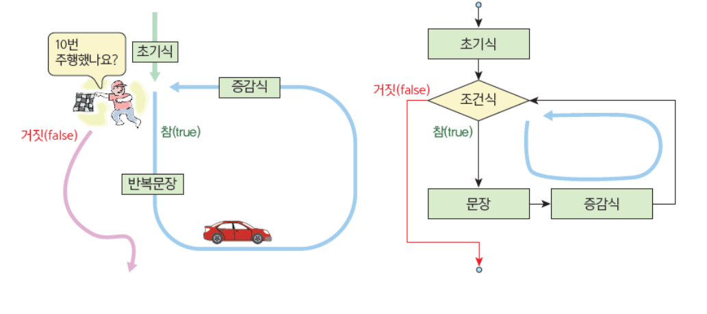
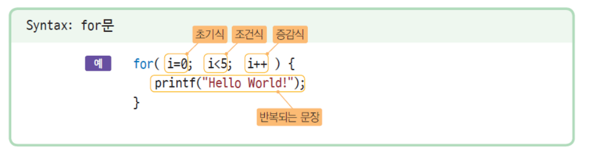
while 루프와 for 루프와의 관계¶
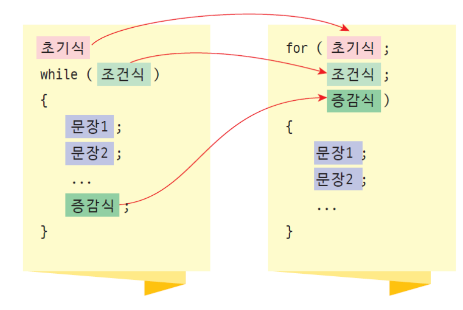
7절. 증감식¶
초기식, 조건식, 증감식¶
- 초기식
- 초기식은 반복 루프를 시작하기 전에 한 번만 실행된다.
- 주로 변수 값을 초기화하는 용도로 사용된다.
- 조건식
- 반복의 조건을 검사하는 수식이다.
- 이 수식의 값이 거짓이 되면 반복이 중단된다.
- 증감식
- 한 번의 루프 실행이 끝나면 증감식이 실행된다.
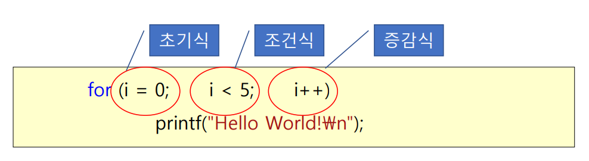
다양한 증감수식의 형태¶
8절. 중첩 반복문¶
중첩 반복문¶
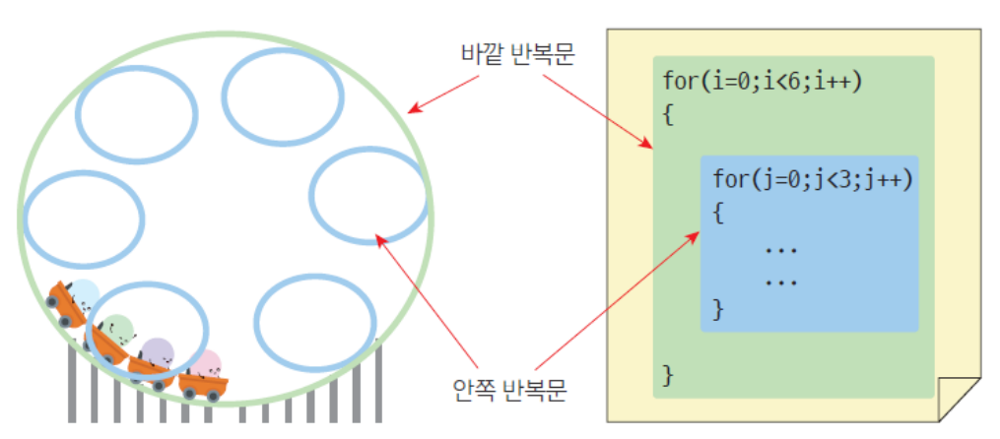
중첩 반복문 예제¶
```C // 중첩 for 문을 이용하여 * 기호를 사각형 모양으로 출력
include ¶
int main(void) { int x, y;
fot (y = 0; y < 5; y++)
{
for (x = 0; x < 10; x++)
printf("*");
}
return 0;
}
C
// 직각삼각형 모양으로 * 출력하기
int main(void)
{
int x, y;
fot (y = 1; y <= 5; y++)
{
for (x = 0; x < y; x++)
printf("*");
printf("\n");
}
return 0;
}
```
9절. 무한 루프¶
무한 루프¶
- 조건 제어 루프에서 가끔은 프로그램이 무한히 반복하는 일이 발생한다.
- 이것은 무한 루프(Infinite loop)로 알려져 있다.
- 무한 반복이 발생하면 프로그램은 빠져나올 수 없기 때문에 문제가 된다.
- 다만 가끔은 의도적으로 무한 루프를 사용하는 경우도 있다.
- ex)신호등 제어 프로그램
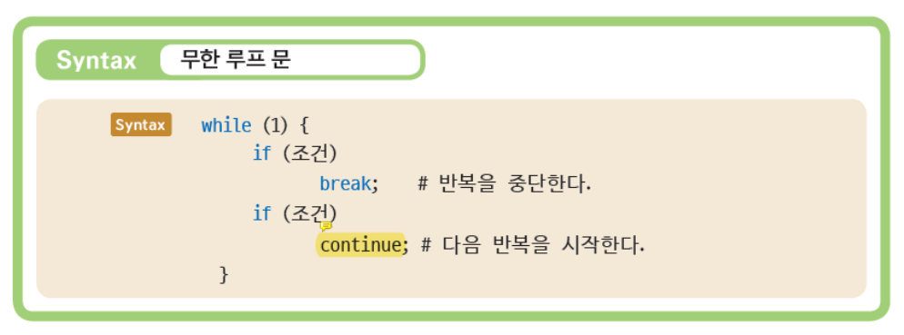
무한 루프가 유용한 경우¶
- 반복을 빠져나가는 조건이 까다로운 경우에 많이 사용된다.
ex) 사용자가 입력한 수가 3의 배수이거나 음수인 경우에 while 루프를 빠져나가야 한다고 하자.
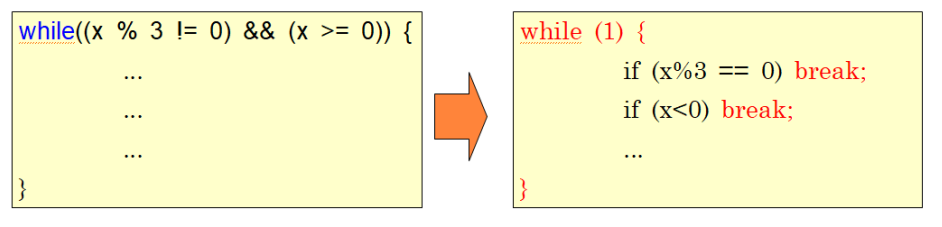
10절. break문 & goto문 & continue문¶
break¶
- 반복 루프를 빠져 나오는 데 사용한다.
goto 문¶
- 중첩 루프 안에서 어떤 문제가 발생했을 경우, goto를 이용하면 단번에 외부로 빠져나올 수 있다.
- break를 사용하면 하나의 루프만을 벗어날 수 있다.
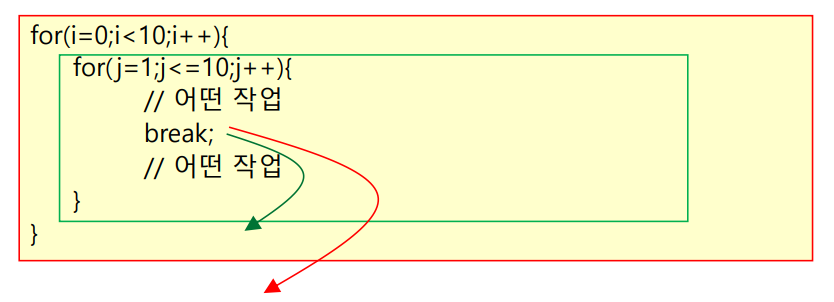
goto 문 예제¶
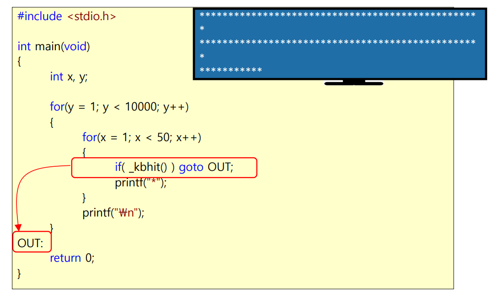
continue 문¶
- 0부터 10까지의 정수 중에서 3의 배수만 제외하고 출력하는 예제를 살펴보자
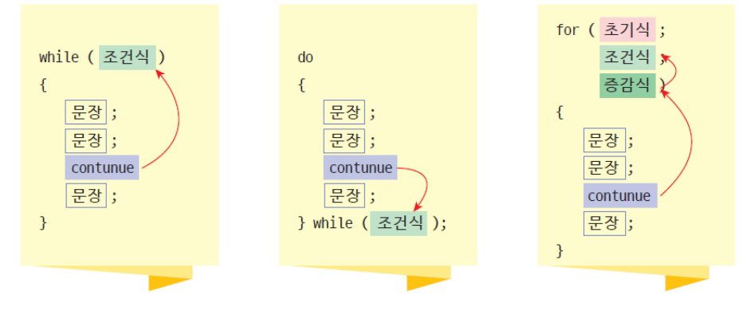
continue 문 예제¶
#include <stdio.h>
int main(void)
{
int i;
for (i = 0; i < 10; i++)
{
if (i % 3 == 0)
continue;
printf("%d", i);
}
return 0;
}
11절. printf¶
printf의 또 다른 형식¶
- %f가 아니라 %.2f
- .2가 의미하는 것은 무조건 소수점 이하 둘째 자리까지만 표시하라는 의미
- 따라서, 왼쪽의 경우 3.141592 중 3.14 까지만 출력되고 나머지는 짤림
- %.100f 로 할 경우에도,3.141592········· 을 표시해서 무조건 100개를 출력
- %d가 아닌 %5d
- 여기서 .5가 아님을 주의
- 숫자의 자리 수를 되도록 5 자리를 맞추어야 하므로 앞에 공백을 남기고 그 뒤에 123을 표시
- 123456을 표시할 때, %5d 조건을 준다면 이 때는 123456을 다 표시
- 앞선 .?f는 ?의 수만큼 소수점 자리수를 맞추지만, 이 경우는 반드시 지켜야되는 것은 아니다.
- 위에서 썼던 두 가지 형식을 모두 한꺼번에 적용
- 전체 자리 수는 6자리로 맞추고 반드시 소수점 이하 셋째 자리까지만 표시
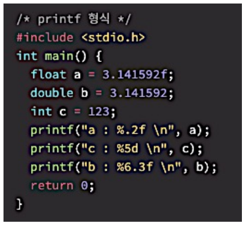
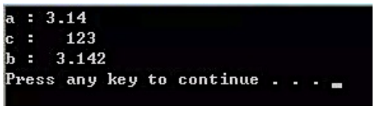